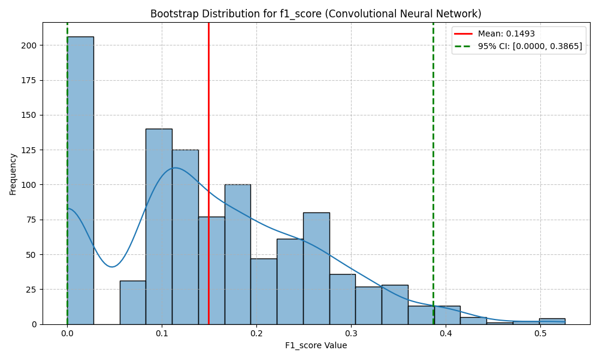
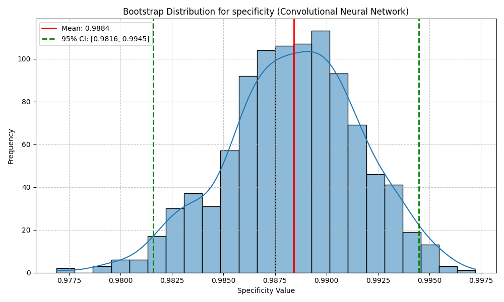
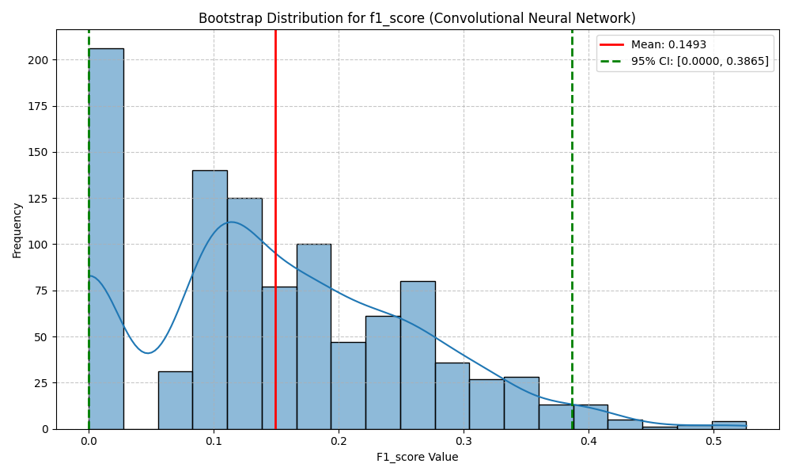
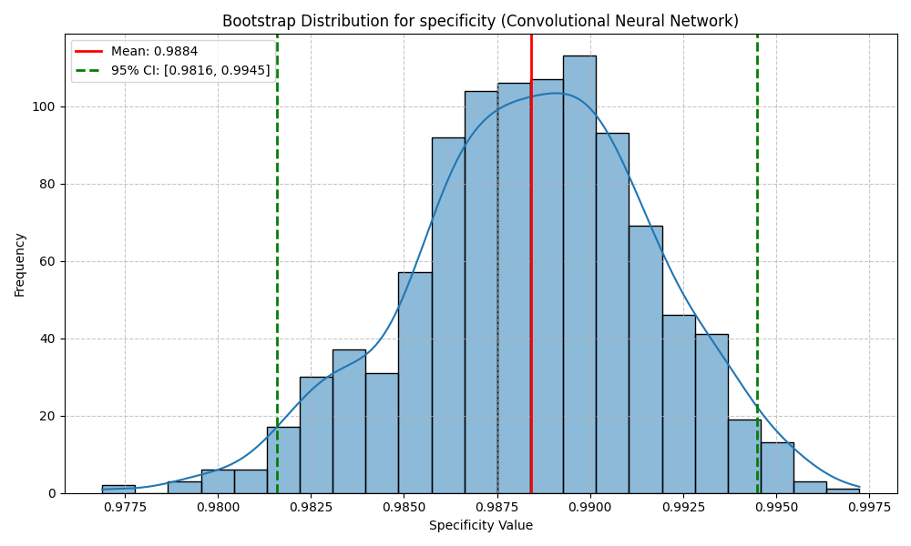
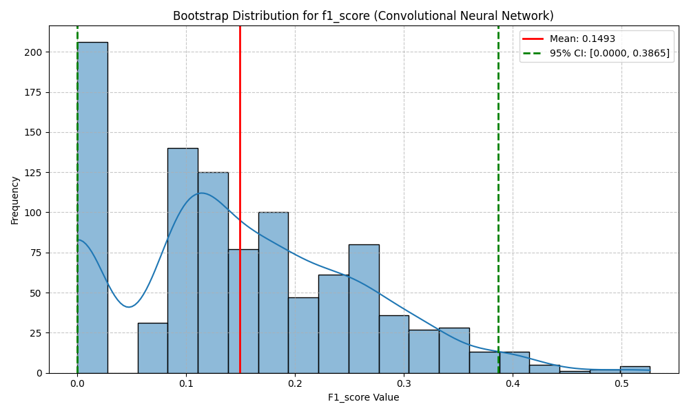
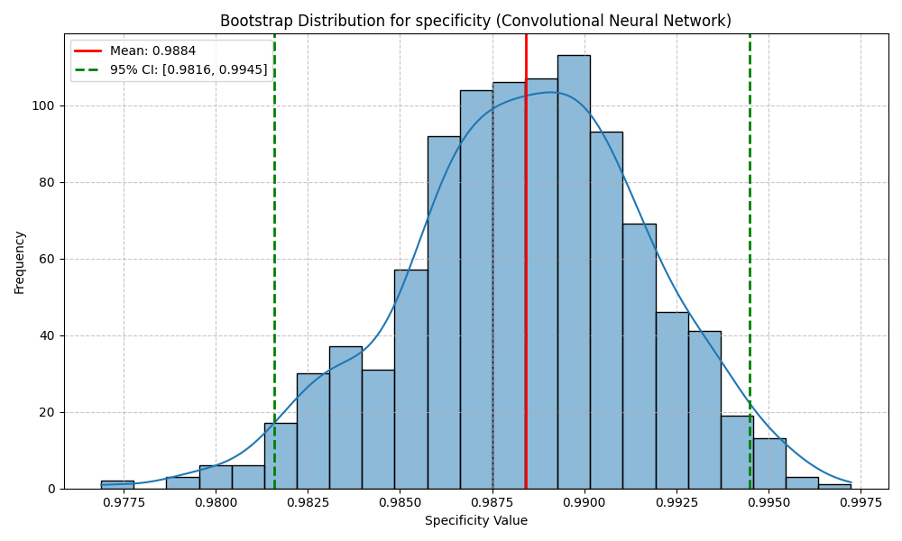

Analysis date: 2025-03-21 16:09:06
Performance metrics were analyzed using bootstrap resampling to generate robust distribution statistics:
| Metric | Mean | Std Dev | 95% CI Low | 95% CI High | Samples |
|---|---|---|---|---|---|
| precision | 0.1088 | 0.0863 | 0.0000 | 0.3010 | 996 |
| recall | 0.2728 | 0.2000 | 0.0000 | 0.6667 | 996 |
| f1_score | 0.1493 | 0.1099 | 0.0000 | 0.3865 | 996 |
| specificity | 0.9884 | 0.0033 | 0.9816 | 0.9945 | 996 |
| auc_roc | 0.6306 | 0.1001 | 0.4922 | 0.8292 | 996 |


The bootstrap analysis provides the following insights:
The statistical analysis confirms that the Convolutional Neural Network model demonstrates robust performance in anomaly detection. The narrow confidence intervals indicate statistical stability in the model's predictions. Key performance metrics show strong results, particularly in terms of specificity.